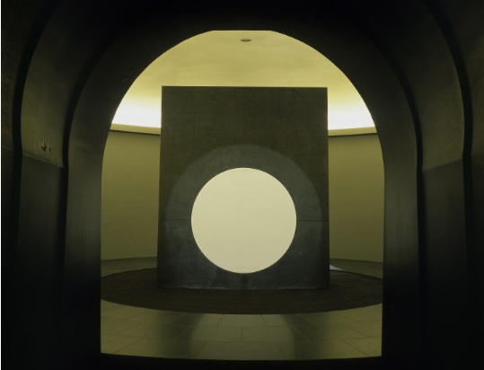
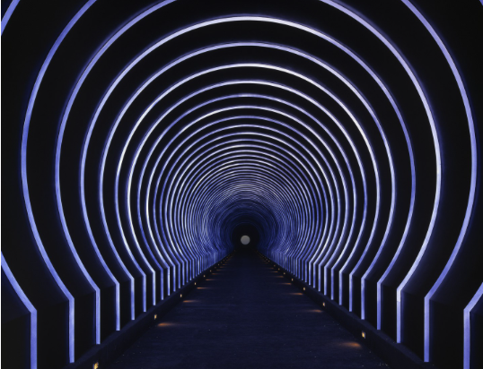
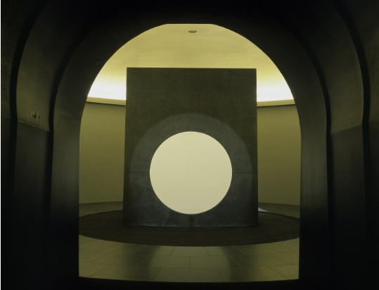
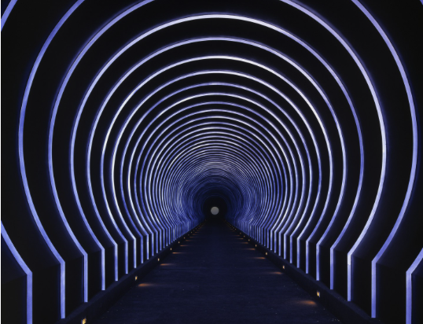

The Brief: Create a vivarium that simulates melting
My response: For this project I created a game environment in which a heart melts once the room fills up with text that implies the build up of a sentiment: He rubbed his cheek against mine
The simulation is twofold:
of gas building up in an enclosed space causing melting
of an expression of intimacy building in the brain causing the heart to "melt"
Music: "Subtext" composed by John Foxx and Harold Budd
 


